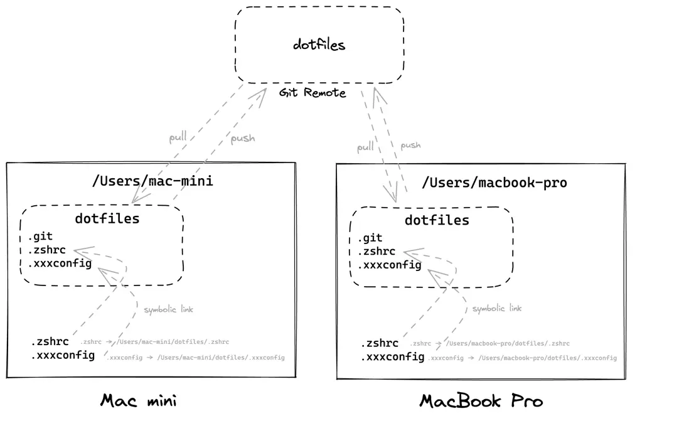

巧用开源软件 Mackup 在不同设备间同步各类软件设置
需要在多个设备上面同步工作的人来说，同步电脑软件配置一直是一个困扰人的问题。虽然很多软件推出了自己的云同步服务，只需要登陆就可以在多台设备中同步设置，但是仍旧有多数软件并没有多设备间的同步功能。现在，我们就可以使用开源软件 Mackup 对设备中无法进行云同步的软件进行配置的备份与还原。

1. 工具介绍
利用 Homebrew 和 Mackup 优雅的备份和恢复电脑开发环境！
以下经历就是，非常让人恼火的，既耽误时间，有没有什么实质意义：
- 安装
Homebrew工具 - 再用
Homebrew安装常用软件，比如iTerm等 - 增加配置文件，配置环境变量，比如
ohmyz、pip等 - 安装
iTerm插件并配置插件 - 安装
VSCode的常用插件并配置插件
如果你只需要备份 Mac 软件的配置文件，可以使用 Time Machine 工具。如果你只需要备份 Homebrew 的话，可以使用 Homebrew Bundle 工具。当然，你也可以使用版本管理系统，比如 git 或云同步工具等。
Mackup 是一款基于 Python 开发的，适用于 Linux/macOS 的命令行备份软件，只需要简单输入几行命令，就可以把应用程序的配置文件备份或还原。Mackup 支持目前市面上主流的云存储，比如 Dropbox、iCloud、OneDrive 等等，通过将备份文件存储到云存储中，再在另一台电脑上还原的方式同步配置。
2. 工具安装
安装方式很简单，需要的是需要配置储存在哪里。
如果你安装了 Dropbox，想用它来保存你的配置文件，这是非常容易的。当然，你也可以选择其他支持的远程存储服务，详情查看下放的配置部分，进行配置。
- On macOS - Homebrew
# Install Mackup
$ brew install mackup
# Upgrade with Homebrew
$ brew update
$ brew upgrade
- Not running macOS - pip
# Install Mackup with PIP
$ pip install mackup
# Upgrade with Python's PIP
$ pip install --upgrade mackup
- On Ubuntu - pip
- 默认
pip将安装到当前用户的家目录下，而不是系统目录。因此，在Ubuntu上安装pip时，需要运行命令时带有--system标志，而在其他平台上不需要添加。
- 默认
# Install Mackup with PIP
$ pip install --upgrade mackup
安装工具之后，就可以使用 backup 命令将配置进行备份。
# Launch it and back up your files
$ mackup backup
如有需要的话，在新的机器上面，只需要执行 restore 命令，即可恢复备份。
# Launch it and restore your files
$ mackup restore
3. 工具配置
工具使用的核心功能介绍，不清楚就看文档。
安装完成之后我们需要对与 Mackup 进行配置，其配置文件为 ~/.mackup.cfg，可以通过编辑进行编辑。
- 首先，选择使用的存储备份方式，默认为
Dropbox服务。 - 然后，在配置文件中填写想要同步设置的软件名称。
- 最后，保存退出就可以用
Mackup进行备份了。- 可以把选择的软件备份到相应的目录下
mackup backup
- 在另一台电脑上，就可以同步配置了
mackup restore
- 可以把选择的软件备份到相应的目录下
# 配置文件目录结构
~/
├── .mackup.cfg
└── .mackup
├── nethack.cfg
├── git.cfg
└── my-files.cfg
当然，我们可以通过 crontab 这样的定时执行程序进一步自动化。如果突然有一天，需要 转换存储 方式，就可以参考官方文档进行处理。
# 实例配置展示
$ vim ~/.mackup.cfg
[storage]
engine = icloud
directory = ~/.config/mackup
[applications_to_sync]
raycast
[applications_to_ignore]
ssh
adium
- 不支持的应用如何配置
当然，对于不在 Mackup 官方支持的软件列表上的软件，也可以自己创建 config 文件来实现备份，实现方式也很简单。
在配置文件中，填入软件的名称和其配置文件的地址相对地址，就可以了。然后运行一下 mackup list 查看是否添加到 Mackup 中，然后在 mackup.cfg 文件中添加 nethack 即可备份。
# 以nethack为例
$ mkdir ~/.mackup
$ vim ~/.mackup/nethack.cfg
[application]
name = Nethack
[configuration_files]
.nethackrc
# 可以查到支持的列表了
$ mackup list
Supported applications:
[...]
- nethack
[...]
- 对使用 XDG 目录的应用程序的支持
对于将其配置存储在 ~/.config 文件夹下的应用程序，不应对其进行 hardcode。Mackup 支持此机制，并提供专用的 xdg_configuration_files 字段。如果任何路径以 .config 开头，请删除 .config 部分并将路径移动到专用的 xdg_configuration_files 部分。
# Instead of: ~/.mackup/git.cfg
[application]
name = Git
[configuration_files]
.gitconfig
.config/git/config
.config/git/ignore
.config/git/attributes
# Use this: ~/.mackup/git.cfg
[application]
name = Git
[configuration_files]
.gitconfig
[xdg_configuration_files]
git/config
git/ignore
git/attributes
4. 常用操作
原理说明：link 大法好！
关于 Mackup 的操作其实非常简单，这里列出 Mackup 的常用操作命令：
mackup backup- 进行备份操作
mackup restore- 进行数据的恢复
mackup list- 查看支持的软件列表
mackup -h- 查看帮助命令
mackup uninstall- 将配置文件拷贝回原来的系统目录
执行 backup 操作，其实是使用 link 的方式，为配置文件创建一个软链接，再让其生效。而执行 restore 操作，则是只执行了 link 的步骤。而执行 uninstall 操作，将删除所有创建的符号链接，并将文件从 Dropbox 中的 Mackup 文件夹复制回家目录的原始位置。
# backup git config to dropbox
$ cp ~/.gitconfig ~/Dropbox/Mackup/.gitconfig
$ rm ~/.gitconfig
$ ln -s ~/Dropbox/Mackup/.gitconfig ~/.gitconfig
# restore git config from dropbox
$ ln -s ~/Dropbox/Mackup/.gitconfig ~/.gitconfig
# uninstall to revert all your files
$ mackup uninstall
5. 备份实践
简述下自己如果要使用 Mackup 的话，主要需要设置的内容。
安装完工具之后，在默认工具配置下面会提供一份 示例配置文件。我们可以通过 copy 官方 Github 代码目录 mackup/doc/.mackup.cfg 的方式将其复制到家目录下面，而不用我们重新生成配置了。
# 示例配置文件(官方代码仓库)
$ cp mackup/doc/.mackup.cfg ~/
- 备份配置文件 - 想要备份的机器
# 初始化目录(喜欢放到git上面)
$ git clone https://github.com/escapelife/dotfiles.git
# 备份其他配置文件(macOS)
$ brew install mackup
$ cp mackup/doc/.mackup.cfg ~/
$ vim ~/.mackup.cfg
# 配置完成后备份
$ mackup backup
# 上传代码到你的仓库
$ git push
# 主配置文件内容
$ cat ~/.mackup.cfg
[storage]
engine = file_system
path = /Users/escape/dotfiles
directory = Mackup
[applications_to_sync]
zsh
vscode
[applications_to_ignore]
ssh
- 初始化新设备 - 想要恢复的机器
./install.sh脚本做了这样一系列事情- 安装
oh-my-zsh + powerlevel10k和一系列插件 - 安装各种工具，包括
iTerm、Homebrew、vsCode等 - 配置
.mackup.cfg软链接
- 安装
# 拉取你的dotfiles仓库
$ git clone https://github.com/escapelife/dotfiles.git
$ cd dotfiles
# 创建配置文件(link)
$ ./install.sh
# 恢复其他配置文件
$ mackup restore
# 备份Homebrew软件
# --describe: 为列表中的命令行工具加上说明性文字
# --force: 直接覆盖之前生成的Brewfile文件
# --file: 在指定位置生成文件(默认在当前目录生成文件)
$ brew bundle dump --describe --force --file="~/dotfiles/Homebrew"
# 批量安装Homebrew软件
$ brew bundle --file="~/your/path/to/Homebrew"
# 手动备份vsCode插件
$ code --install-extension dbaeumer.vscode-eslint
# 批量安装vsCode插件
$ code --install-extension dbaeumer.vscode-eslint
6. 问题处理
记录使用过程中，需要的问题以及处理方式。
- 问题一：iTerm2 DynamicProfiles FileExistsError
# 问题
FileExistsError: [Errno 17] File exists: '/Users/username/Library/Mobile Documents/xxx/iTerm2/DynamicProfiles' -> 'xxx'
# 解决
# 更简单的解决方法，关闭iTerm.app阻止它重新创建DynamicProfiles
$ killall iTerm2
$ mackup backup
7. 参考链接
送人玫瑰，手有余香。